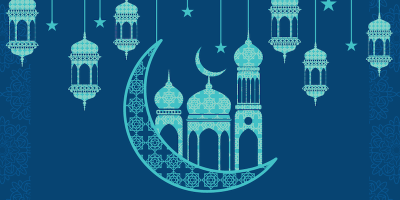

Aidilfitri

Hari Raya Aidilfitri (Bahasa Arab: عيد الفطر; ʿĪd al-Fiṭr; "perayaan buka puasa") disambut pada 1 Syawal tahun Hijrah. Perayaan tersebut juga dikenali sebagai Hari Raya Puasa, Hari Raya Fitrah atau Hari Lebaran. Hari Raya Aidilfitri merupakan perayaan yang disambut oleh umat Islam di seluruh dunia tidak kira bangsa sama ada Arab, Inggeris, Melayu, India-Muslim, Cina-Muslim dan lain-lain bangsa di seluruh dunia yang beragama Islam bagi menandakan berakhirnya bulan Ramadhan yang mana umat Islam telah menjalani ibadat puasa dengan tekun. Ia merupakan antara dua perayaan terbesar bagi umat Islam, selain Hari Raya Kurban.
more about Aidilfitri